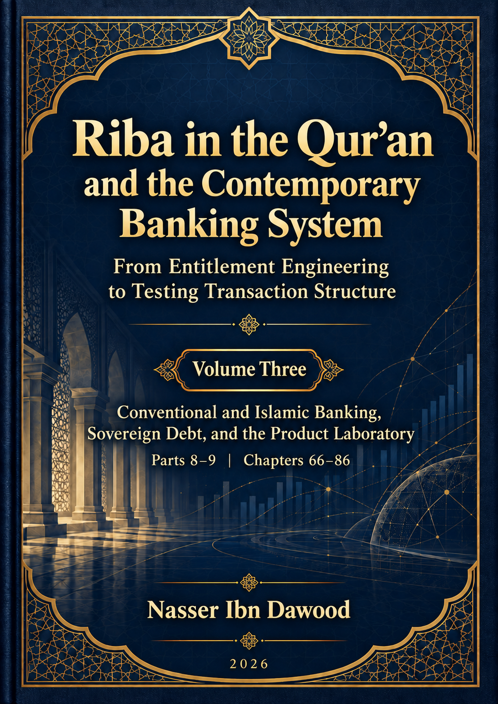

131. Riba in the Qur’an and the Contemporary Banking System — Volume Three

Conventional and Islamic banking, sovereign debt, and structural auditing of financial products through the author’s research framework.
Condensed conceptual English adaptation; the Arabic text remains the primary source for detailed analysis and references.
قراءة PDF داخل الموقع / Read the PDF on this website
جارٍ تجهيز القارئ… / Preparing the reader…
Book Summary, Table of Contents & Excerpt
Riba in the Qur’an and the Contemporary Banking System
Volume Three: Banking, Sovereign Debt, and the Structural Audit of Financial Products
I. The Global Knowledge Manifesto
Knowledge is a universal right. The author firmly believes that wisdom should not be locked behind paywalls or language barriers.
Global Access Policy. All books in this library are available for free in multiple digital formats (PDF, HTML, DOCX, TXT).
The Digital Library. As of early 2026, the collection hosts 236 volumes (118 in Arabic and 118 in English), fully optimized for AI-assisted research and digital archiving.
Official Platforms. Main Website: nasserhabitat.github.io/nasser-books/
GitHub: nasserhabitat/nasser-books
This manifesto is reproduced here as supplied by the author for this condensed edition.
II. Translator’s Note: The Bridge of Meaning
This English edition is a condensed conceptual adaptation. It is not a word-for-word translation, but rather an “extraction of essence.” It presents the core philosophical framework in accessible English, omitting the exhaustive linguistic debates and classical references found in the original Arabic text.
For the academic researcher, the original Arabic version remains the primary source for comprehensive linguistic analysis, detailed exegesis (tafsir), and the complete bibliography.
This adaptation also preserves the methodological status of the Arabic edition. A claim marked OPEN remains open; a CANDIDATE remains a candidate; a RESISTED or STRONGLY RESISTED claim is not revived through simplification; and a CLOSED result remains closed only within its declared scope. The aim is clarity without scientific inflation.
Key Qur’anic terms are sometimes retained in transliteration—such as nafs, tawaffī, barzakh, and baʿth—when a single English equivalent would prematurely narrow the field under study.
Scope of this volume
Volume Three covers Chapters 66–86: a functional account of banking, case-level comparisons of conventional and Islamic banking, a macro-level sovereign-debt application, and the first eleven product audits. It begins the product laboratory that continues in Volume Four. The summaries below condense the argument and its method; they do not reproduce the original’s complete evidence, tables, claim cards, or references.
Methodological boundary
The Qur’anic corpus remains the source for investigating the meaning of riba. Contemporary bank documents and financial records describe applications; they do not define the Qur’anic term. This volume applies the audit frame developed earlier to banks, public debt, and financial products, while preserving the distinction between a textual result and an application-level observation.
The principal unit of analysis is a specific transaction or linked sequence of transactions. An institution, a product family, a contract label, a macroeconomic outcome, or an accounting category cannot replace case-level evidence. The audit asks what was transferred, who owned it, what claim arose, on what ground, when it arose, and how rights and risks were allocated. Missing evidence remains missing; it is not supplied by a label or presumed from an institution’s identity.
The final definition of riba remains NOT SEALED, and classification readiness remains OPEN / NOT PASSED. E*-R2 remains an open candidate. RIBA-QTAM v0.1 is a structural audit model, not an automatic classifier. These limits govern every chapter that follows.
Part VIII — Conventional and Islamic banks as audit laboratories (Chapters 66–75)
Chapter 66 — What is a bank? Decompose functions before names
The chapter treats a bank as a collection of functions rather than as a single transaction or a self-explanatory category. Deposit-taking, credit provision, intermediation, maturity transformation, liquidity provision, payments, credit assessment, and risk management may coexist in one institution, but each function can produce different claims and structures.
The functional map is descriptive. “Intermediation,” “liquidity,” or “banking function” is not presented as a Qur’anic ground of entitlement. A bank balance sheet can help map claims and obligations, but it is an accounting description, not a Qur’anic model. The chapter therefore moves from institution to product and then to the individual case, using the same audit questions without turning the bank’s name into a verdict.
Chapter 67 — Deposits, credit, and financing
This chapter separates deposit-taking, credit, and financing because they describe different directions and functions. A deposit account may create an obligation owed by the bank; credit may create a claim owed by a customer; financing may involve a more complex sequence than a single loan. A customer’s “account” is not necessarily one uniform structure, and the word deposit alone does not settle whether a particular arrangement functions as storage, a debt, or another claim.
The chapter tracks money flows and claim directions, distinguishing the economic function from the type of claim. Deposit returns, credit charges, financing margins, service fees, insurance, guarantees, and commercial financing should not be collapsed into one category. The multi-claim rule remains useful: identify each claim separately and trace its ground. None of these distinctions, by itself, establishes a Qur’anic classification.
Chapter 68 — The bank loan as a structural case template
The bank loan is introduced as a template for examining an individual case, not as a product-level ruling. The audit identifies the parties, the initial provision of money, the creation of the debt, principal, interest, fees, other charges, term, rate, annual percentage rate, fixed or variable terms, and repayment schedule. It then maps when each obligation arises and who holds each claim.